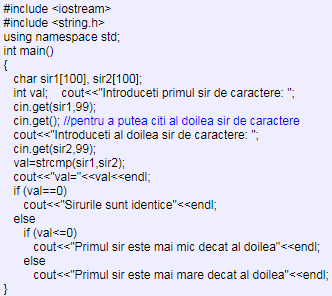

- Funcția strlen - permite aflarea lungimii exacte a unui sir de caractere (exceptannd caracterul NULL).
- Funcția strupr - permite transformarea literelor mici în litere mari.
- Funcția strlwr - permite transformarea literelor mari în litere mici.
- Funcția strcat - permite concatenarea a doua șiruri de caractere.
- Funcția strncat strncat(șir1, șir2, n) - adaugă primele n caractere din șirul șir2 la șirul șir1 - al doilea șir rămane neschimbat.
- Funcția strcpy - permite copierea unui șir de caractere în alt șir de caractere.
- Funcția strncpy strncpy(șir1, șir2, n) - copiază primele n caractere din șirul șir2 în șirul șir1 - primul șir va fi suprascris în cazul în care acesta este inițializat anterior.
- Funcția strcmp - permite compararea a două șiruri de caractere prin compararea codurilor ASCII ale caracterelor corespondențe din fiecare șir. Se citește caracter cu caracter din fiecare șir și se compară codurile ASCII până când codurile diferă sau până când se întalnește primul caracter NULL.
- un numar negativ, dacă primul șir este mai mic decât al doilea
- 0, daca șirurile sunt egale
- un numar pozitiv, dacă primul șir este mai mare decât al doilea
- Funcția strncmp strncmp(sir1, sir2, n)
- Funcția strchr - permite căutarea unui caracter într-un șir de caractere. Căutarea se face de la stânga la dreapta iar rezultatul apelului funcției este subșirul de caractere care începe cu prima apariție a caracterului căutat și restul caracterelor șirului inițial.
- Funcția strrchr strrchr(șir, caracter)
- Funcția strstr - verifică daca un șir reprezintă un subșir al unui șir dat, căutarea făcându-se de la stanga la dreapta. În caz afirmativ, întoarce subșirul format din șirul căutat și restul caracterelor șirului inițial. În caz contrar, întoarce șirul vid. Mai exact, când șirul căutat este găsit în șirul inițial, apelul funcției returnează adresa de memorie corespunzătoare poziției subșirului în cadrul șirului inițial, iar în caz contrar întoarce adresa 0.
- Funcția strrev - returnează în ordine inversă șirul de caractere introdus ca parametru. Șirul inițial este suprascris cu șirul citit în ordine inversă.
Exemplu: Se citeste de la tastatura un sir de caractere. Să se afiseze lungimea acestuia.
! Atenție:
- lungimea șirului nu include caracterul NULL aflat la sfarșitul șirului de caractere (terminator al șirului).
Exemplu: Se citește de la tastatură un șir de caractere. Să se convertească toate literele mici în litere mari.
Exemplu: Se citește de la tastatură un șir de caractere. Să se convertească toate literele mari în litere mici.

Sintaxa: strcat(șir1, șir2) - adaugă șirul șir2 la șirul șir1 - al doilea șir rămâne neschimbat.
Exemplu: Se citesc de la tastatură doua șiruri de caractere. Să se concateneze cele doua șiruri și să se afișeze conținutul acestora în urma concatenării.
Exemplu: Se citesc de la tastatură două șiruri de caractere. Să se concateneze cele doua șiruri prin adăugarea primelor n caractere din al doilea șir la sfarșitul primului șir, iar apoi și să se afișeze conținutul celor două șiruri în urma concatenării.
Sintaxa: strcpy(sir1, sir2) - copiază șirul șir2 în șirul șir1 - primul șir va fi suprascris în cazul în care acesta este inițializat anterior.
Exemplu: Se citesc de la tastatură doua șiruri de caractere. Să se copieze al doilea șir de caractere în primul și să se afișeze conținutul celor două șiruri în urma acestei operații.
Exemplu: Se citesc de la tastatură doua șiruri de caractere. Să se copieze primele n caractere din al doilea șir de caractere în primul și să se afișeze conținutul celor două șiruri în urma acestei operații.
Sintaxa: strcmp(șir1, șir2) - returnează:
Exemplu: Se citesc de la tastatură două șiruri de caractere. Să se indice care dintre cele două șiruri este mai mare sau dacă cele doua șiruri sunt identice.

Această formă permite compararea a două șiruri de caractere prin compararea codurilor ASCII ale caracterelor corespondente din fiecare șir. Se citește caracter cu caracter din fiecare șir și se compară codurile ASCII până când codurile diferă, sau până când se întâlnește primul caracter NULL, sau până când se ajunge la caracterul numărul n în oricare din cele două șiruri.
Exemplu: Se citesc de la tastatură doua șiruri de caractere. Să se determine dacă primele n caractere ale celor 2 șiruri sunt identice.

Sintaxa: strchr(șir, caracter)
Exemplu: Să se determine pe ce poziție se găsește prima apariție a caracterului c în șirul s, unde șirul s și caracterul c se citesc de la tastatură.

Sub această formă, funcția realizează același lucru, căutarea unul caracter într-un șir de caractere, numai că, de această dată, căutarea se face de la dreapta la stanga.
Exemplu: Să se determine pe ce poziție se găsește ultima apariție a caracterului c în șirul s, unde șirul s și caracterul c se citesc de la tastatură.
Sintaxa: strstr(șir1, șir2) - verifică dacă șirul șir2 este subșir al șirului șir1.
Observație: Dacă șirul șir2 este întâlnit de mai multe ori în cadrul șirului șir1, atunci apelul funcției returnează adresa de memorie corespunzătoare primei apariții a subșirului în cadrul șirului dat.
Exemplu: Să se determine dacă șirul b se găsește în șirul a și să se determine poziția primei apariții.
Sintaxa: strrev(șir)
Exemplu: Să se determine dacă șirul a, introdus de la tastatură, este sau nu un palindrom (șirul este identic cu șirul citit invers).